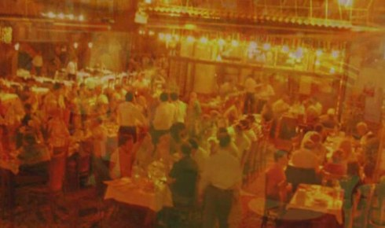
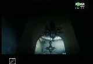
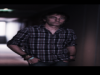
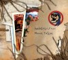
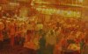
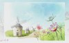
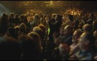
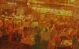
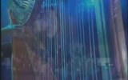

İzlesene.com
VİDEO ARA
-1
Video Yükle
Giriş Yap
Üye Ol
ÜYELİK GİRİŞİ
Facebook ile Bağlan
YA DA
Kullanıcı adınız veya şifreniz hatalı.
Şifremi Unuttum
YENİ
Üye Ol
Anasayfa
Müzik
Komik
Dizi
Spor
Sinema
Oyun
Çizgi Film
Kanallar
Videolar
İzlesene
>
Müzik
> Enstrümantal
ENSTRÜMANTAL
TÜM MÜZİK VİDEOLARI
SANATÇILAR
KATEGORİLER
YABANCI ROCK
ELEKTRONİK
R&B
CAZ
ENSTRÜMANTAL
ŞİİR
ORYANTAL
YERLİ DJ
KLASİK MÜZİK
TÜM KATEGORİLER
ARABESK
TÜRKÇE POP
ARABESK RAP
TÜRK HALK MÜZİĞİ
YABANCI POP
TÜRK SANAT MÜZİĞİ
TÜRKÇE RAP
TÜRKÇE ROCK
Amelie Soundtrack
Yann Tiersen
Üsküdara Giderken
Murat Tuğsuz

Ah İstanbul
Can Atilla
Enstrumantel
Grup Yansımalar
I Love You
Ömer Faruk Tekbilek

Sultanlar Askına
Can Atilla
Idea
Can Atilla
Ft. Zara - Leyla Ile Mecnun
Can Atilla
Hicaz Rumeli Türküsü
Grup Yansımalar
Why
Ömer Faruk Tekbilek
POPÜLER LİSTELER
114 VİDEO
HEPSİNİ ÇAL
Can Atilla
28 VİDEO
HEPSİNİ ÇAL
Yanni
99 VİDEO
HEPSİNİ ÇAL

Yann Tiersen
52 VİDEO
HEPSİNİ ÇAL
Grup Yansımalar
56 VİDEO
HEPSİNİ ÇAL
Yusuf Bütünley
97 VİDEO
HEPSİNİ ÇAL
Grup Gezgin
9 VİDEO
HEPSİNİ ÇAL
Ömer Faruk Tekbilek
21 VİDEO
HEPSİNİ ÇAL
Grup İncesaz
4 VİDEO
HEPSİNİ ÇAL

Murat Tuğsuz
12 VİDEO
HEPSİNİ ÇAL
Laço Tayfa
POPÜLER ŞARKILAR

03:40
Ah İstanbul
Can Atilla
3.266 izlenme
05:48
Canlı Performans
Yanni
8.844 izlenme
01:00:03
Amelie Soundtrack
Yann Tiersen
22.783 izlenme
03:45
Enstrumantel
Grup Yansımalar
2.755 izlenme
10:13
Duduk
Yanni
6.886 izlenme
01:10
La Redécouverte
Yann Tiersen
255 izlenme

05:27
Rodrigo's Guitar
Yusuf Bütünley
607 izlenme
03:34
Hicaz Rumeli Türküsü
Grup Yansımalar
4.899 izlenme
06:22
Yüce Dağlar
Grup Yansımalar
6.175 izlenme
06:11
One Man's Dream
Yanni
3.756 izlenme
EN YENİ ŞARKILAR
01:10
La Redécouverte
Yann Tiersen
255 izlenme
10:13
Duduk
Yanni
6.886 izlenme

04:12
Enstrümental
Yanni
1.858 izlenme
05:48
Canlı Performans
Yanni
8.844 izlenme
05:27
Rodrigo's Guitar
Yusuf Bütünley
607 izlenme

03:40
Ah İstanbul
Can Atilla
3.266 izlenme
06:34
Within Attraction
Yanni
418 izlenme
03:45
Enstrumantel
Grup Yansımalar
2.755 izlenme
02:26
Hüznümün Sesi
Grup Gezgin
25 izlenme

08:39
De
Yanni
859 izlenme
POPÜLER SANATÇILAR
Can Atilla
Yanni
Yann Tiersen
Grup Yansımalar
Yusuf Bütünley
Grup Gezgin
Ömer Faruk Tekbilek
Grup İncesaz
Murat Tuğsuz
Laço Tayfa
X


 06:22
06:22
 06:11
06:11
 02:26
02:26